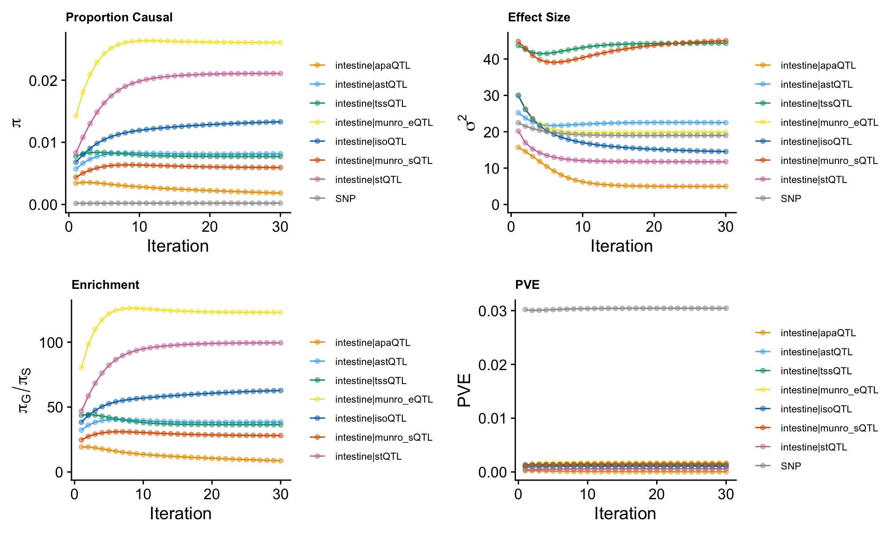
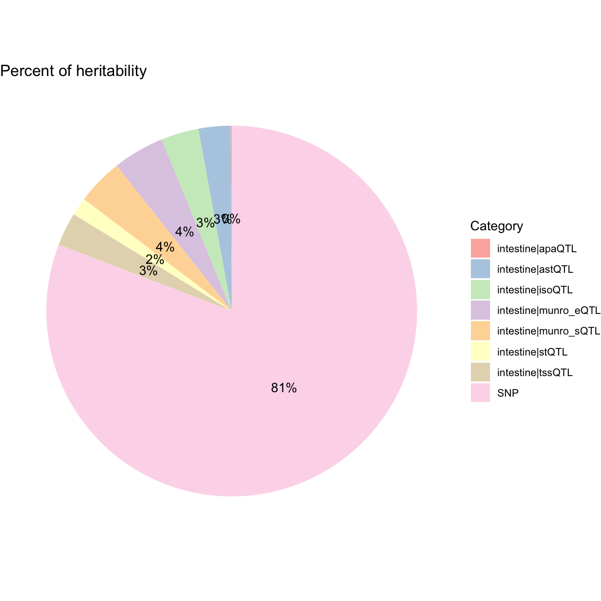
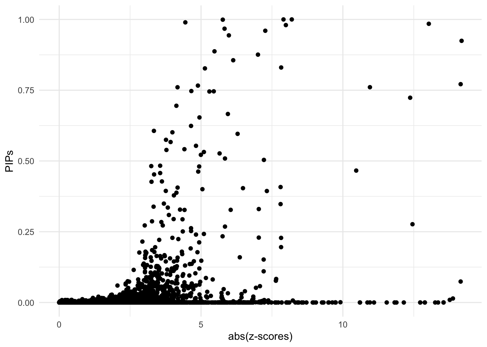
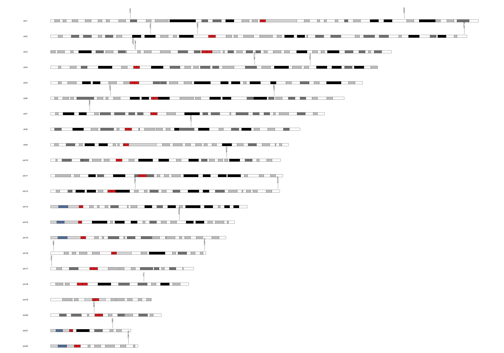
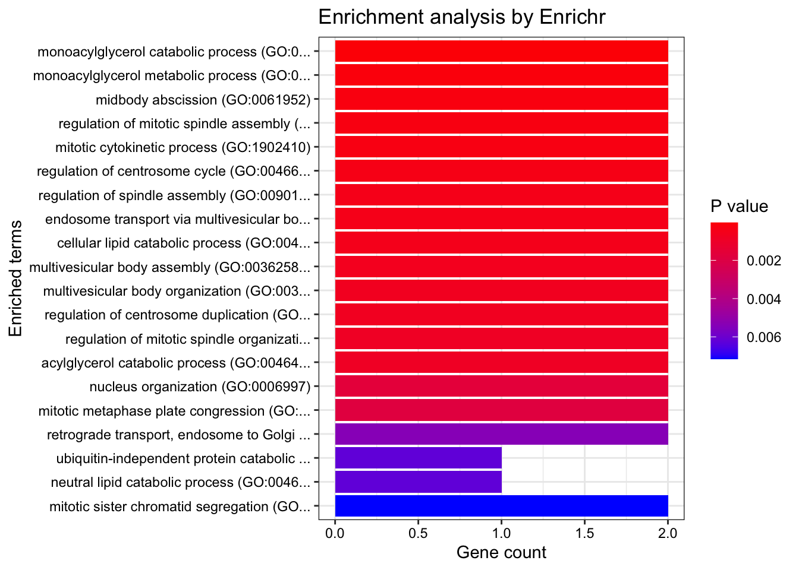
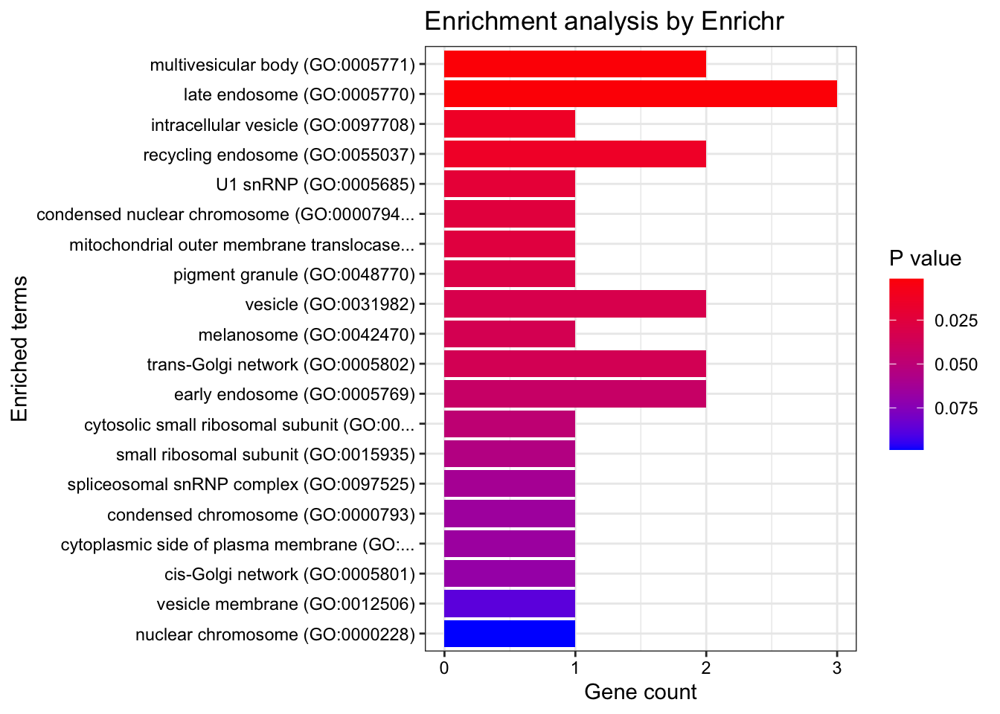
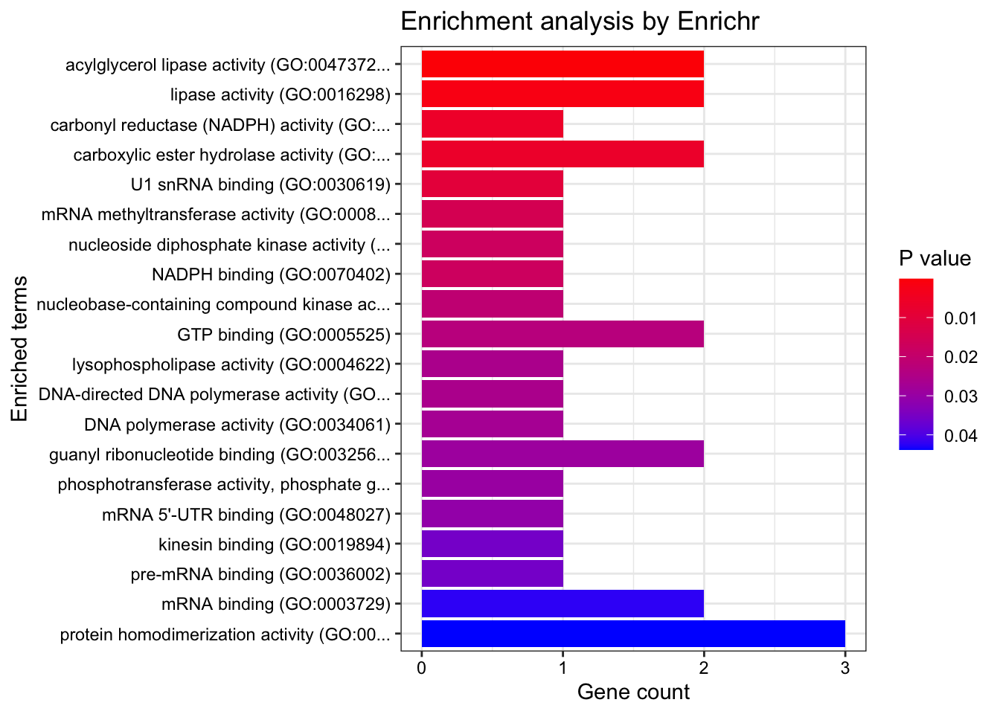

Prostate Cancer ~ Munro 7 small intestine QTLs
Nina Yifan Yang
2024-11-09
Last updated: 2024-11-09
Checks: 7 0
Knit directory: Multigroup_cTWAS/
This reproducible R Markdown analysis was created with workflowr (version 1.7.1). The Checks tab describes the reproducibility checks that were applied when the results were created. The Past versions tab lists the development history.
Great! Since the R Markdown file has been committed to the Git repository, you know the exact version of the code that produced these results.
Great job! The global environment was empty. Objects defined in the global environment can affect the analysis in your R Markdown file in unknown ways. For reproduciblity it’s best to always run the code in an empty environment.
The command set.seed(20241004) was run prior to running
the code in the R Markdown file. Setting a seed ensures that any results
that rely on randomness, e.g. subsampling or permutations, are
reproducible.
Great job! Recording the operating system, R version, and package versions is critical for reproducibility.
Nice! There were no cached chunks for this analysis, so you can be confident that you successfully produced the results during this run.
Great job! Using relative paths to the files within your workflowr project makes it easier to run your code on other machines.
Great! You are using Git for version control. Tracking code development and connecting the code version to the results is critical for reproducibility.
The results in this page were generated with repository version 04dcb6e. See the Past versions tab to see a history of the changes made to the R Markdown and HTML files.
Note that you need to be careful to ensure that all relevant files for
the analysis have been committed to Git prior to generating the results
(you can use wflow_publish or
wflow_git_commit). workflowr only checks the R Markdown
file, but you know if there are other scripts or data files that it
depends on. Below is the status of the Git repository when the results
were generated:
Ignored files:
Ignored: .DS_Store
Ignored: .Rhistory
Ignored: analysis/.DS_Store
Ignored: analysis/.Rhistory
Note that any generated files, e.g. HTML, png, CSS, etc., are not included in this status report because it is ok for generated content to have uncommitted changes.
These are the previous versions of the repository in which changes were
made to the R Markdown
(analysis/cTWAS_LD_european_munro_small_intestine7_output.Rmd)
and HTML
(docs/cTWAS_LD_european_munro_small_intestine7_output.html)
files. If you’ve configured a remote Git repository (see
?wflow_git_remote), click on the hyperlinks in the table
below to view the files as they were in that past version.
| File | Version | Author | Date | Message |
|---|---|---|---|---|
| Rmd | 04dcb6e | yy896 | 2024-11-09 | UPDATED RESULTS |
Here presenting a cTWAS results report based on real data analysis. The analyzed trait is prostate cancer, the prediction models are Munro et.al multimodal 7 QTLs.
Analysis Settings
Input Data
- GWAS Z-scores
The summary statistics for prostate cancer are downloaded from https://www.ebi.ac.uk/gwas/downloads/summary-statistics, using dataset ID: GCST90274714.
The sample size is
[1] "gwas_n = 726828"- Prediction models
The prediction models used in this analysis are Munro et.al 7 QTLs. Source data: https://www.dropbox.com/scl/fo/c88y8wu8u6beaxar3bs7g/h?rlkey=d2atycui3uyq83igk4hipu8ln&dl=0.
- Reference data
We did include ukb38 whole genome LD reference in the analysis.
Data processing and harmonization
We map the reference SNPs to regions following the instructions from the cTWAS tutorial.
When processing z-scores, we exclude multi-allelic and
strand-ambiguous variants by setting
drop_multiallelic = TRUE and
drop_strand_ambig = TRUE.
The process can be divided into steps below, users can expand the code snippets below to view the exact code used.
- Input and output settings
weight_files <- c("/project2/xinhe/shared_data/multigroup_ctwas/weights/Munro_alt_polyA_PredictDB/apa_Small_Intestine_Terminal_Ileum.db",
"/project2/xinhe/shared_data/multigroup_ctwas/weights/Munro_alt_stability_PredictDB/Small_Intestine_Terminal_Ileum.db",
"/project2/xinhe/shared_data/multigroup_ctwas/weights/Munro_alt_tss_PredictDB/tss_Small_Intestine_Terminal_Ileum.db",
"/project2/xinhe/shared_data/multigroup_ctwas/weights/Munro_expression_PredictDB/expression_Small_Intestine_Terminal_Ileum.db",
"/project2/xinhe/shared_data/multigroup_ctwas/weights/Munro_isoform_PredictDB/isoform_Small_Intestine_Terminal_Ileum.db",
"/project2/xinhe/shared_data/multigroup_ctwas/weights/Munro_splicing_PredictDB/splicing_Small_Intestine_Terminal_Ileum.db",
"/project2/xinhe/shared_data/multigroup_ctwas/weights/Munro_stability_PredictDB/stability_Small_Intestine_Terminal_Ileum.db")
z_snp <- vroom::vroom("/project2/xinhe/yifany/GCST90274714.mod.tsv.gz", col_names = TRUE, show_col_types = FALSE)
z_snp$Z <- z_snp$beta / z_snp$standard_error
# gwas_n <- as.numeric(names(sort(table(z_snp$base_pair_location), decreasing = TRUE)[1]))
# cat("gwas_n =", gwas_n, "\n")
gwas_n <- 726828
z_snp <- z_snp[, c("rsid", "other_allele", "effect_allele", "Z")]
colnames(z_snp) <- c("id", "A1", "A2", "z")
region_file <- system.file("extdata/ldetect", "EUR.b38.ldetect.regions.RDS", package = "ctwas")
region_info <- readRDS(region_file)
# output dir
outputdir <- "/project2/xinhe/yifany/multigroup_cTWAS"
dir.create(outputdir, showWarnings=F, recursive=T)
# Number of cores
ncore <- 5- Preprocessing GWAS
### Preprocess SNP_map and LD_map
genome_version <- "b38"
region_file <- system.file("extdata/ldetect", paste0("EUR.", genome_version, ".ldetect.regions.RDS"), package = "ctwas")
region_info <- readRDS(region_file)
LD_dir <- "/project2/mstephens/wcrouse/UKB_LDR_0.1"
LD_filestem <- sprintf("ukb_%s_0.1_chr%s.R_snp.%s_%s", genome_version, region_info$chrom, region_info$start, region_info$stop)
region_metatable <- region_info
region_metatable$LD_file <- file.path(LD_dir, paste0(LD_filestem, ".RDS"))
region_metatable$SNP_file <- file.path(LD_dir, paste0(LD_filestem, ".Rvar"))
res <- create_snp_LD_map(region_metatable)
region_info <- res$region_info
snp_map <- res$snp_map
LD_map <- res$LD_map
z_snp <- preprocess_z_snp(z_snp, snp_map,
drop_multiallelic = TRUE,
drop_strand_ambig = TRUE)- Preprocessing weights
weights_intestine_apaQTL <- preprocess_weights(weight_files[1],
region_info,
gwas_snp_ids = z_snp$id,
snp_map = snp_map,
LD_map = LD_map,
type = "apaQTL",
context = "intestine",
weight_format = "PredictDB",
drop_strand_ambig = TRUE,
scale_predictdb_weights = TRUE,
load_predictdb_LD = FALSE,
filter_protein_coding_genes = TRUE,
ncore = ncore)
weights_intestine_astQTL <- preprocess_weights(weight_files[2],
region_info,
gwas_snp_ids = z_snp$id,
snp_map = snp_map,
LD_map = LD_map,
type = "astQTL",
context = "intestine",
weight_format = "PredictDB",
drop_strand_ambig = TRUE,
scale_predictdb_weights = TRUE,
load_predictdb_LD = FALSE,
filter_protein_coding_genes = TRUE,
ncore = ncore)
weights_intestine_tssQTL <- preprocess_weights(weight_files[3],
region_info,
gwas_snp_ids = z_snp$id,
snp_map = snp_map,
LD_map = LD_map,
type = "tssQTL",
context = "intestine",
weight_format = "PredictDB",
drop_strand_ambig = TRUE,
scale_predictdb_weights = TRUE,
load_predictdb_LD = FALSE,
filter_protein_coding_genes = TRUE,
ncore = ncore)
weights_intestine_eQTL <- preprocess_weights(weight_files[4],
region_info,
gwas_snp_ids = z_snp$id,
snp_map = snp_map,
LD_map = LD_map,
type = "munro_eQTL",
context = "intestine",
weight_format = "PredictDB",
drop_strand_ambig = TRUE,
scale_predictdb_weights = TRUE,
load_predictdb_LD = FALSE,
filter_protein_coding_genes = TRUE,
ncore = ncore)
weights_intestine_isoQTL <- preprocess_weights(weight_files[5],
region_info,
gwas_snp_ids = z_snp$id,
snp_map = snp_map,
LD_map = LD_map,
type = "isoQTL",
context = "intestine",
weight_format = "PredictDB",
drop_strand_ambig = TRUE,
scale_predictdb_weights = TRUE,
load_predictdb_LD = FALSE,
filter_protein_coding_genes = TRUE,
ncore = ncore)
weights_intestine_sQTL <- preprocess_weights(weight_files[6],
region_info,
gwas_snp_ids = z_snp$id,
snp_map = snp_map,
LD_map = LD_map,
type = "munro_sQTL",
context = "intestine",
weight_format = "PredictDB",
drop_strand_ambig = TRUE,
scale_predictdb_weights = TRUE,
load_predictdb_LD = FALSE,
filter_protein_coding_genes = TRUE,
ncore = ncore)
weights_intestine_stQTL <- preprocess_weights(weight_files[7],
region_info,
gwas_snp_ids = z_snp$id,
snp_map = snp_map,
LD_map = LD_map,
type = "stQTL",
context = "intestine",
weight_format = "PredictDB",
drop_strand_ambig = TRUE,
scale_predictdb_weights = TRUE,
load_predictdb_LD = FALSE,
filter_protein_coding_genes = TRUE,
ncore = ncore)
weights <- c(
weights_intestine_apaQTL,
weights_intestine_astQTL,
weights_intestine_tssQTL,
weights_intestine_eQTL,
weights_intestine_isoQTL,
weights_intestine_sQTL,
weights_intestine_stQTL)Running cTWAS analysis
We use the ctwas main function ctwas_sumstats to run the
cTWAS analysis with LD. For more details on this function, refer to the
cTWAS tutorial: https://xinhe-lab.github.io/multigroup_ctwas/articles/running_ctwas_analysis.html
Users can expand the code snippets below to view the exact code used.
ctwas_res <- ctwas_sumstats_noLD(z_snp,
weights,
region_info,
snp_map,
thin = 0.1,
ncore = 5)Parameter estimation
ctwas_res is the object contains the outputs of
cTWAS
We extract the estimated parameters by
param <- ctwas_res$param
We make plots using the function
make_convergence_plots(param, gwas_n) to see how estimated
parameters converge during the execution of the program:

These plots show the estimated prior inclusion probability, prior effect size variance, enrichment and proportion of variance explained (PVE) over the iterations of parameter estimation. The enrichment is defined as the ratio of the prior inclusion probability of molecular traits over the prior inclusion probability of variants. We generally expect molecular traits to have higher prior inclusion probability than variants. Enrichment values typically range from 20 - 100 for expression traits.
Then, we use summarize_param(param, gwas_n) to obtain
estimated parameters (from the last iteration) and to compute the PVE by
variants and molecular traits.
[1] "The number of genes/introns/SNPs used in the analysis is:" intestine|apaQTL intestine|astQTL intestine|tssQTL
3275 4135 2333
intestine|munro_eQTL intestine|isoQTL intestine|munro_sQTL
2375 4651 4120
intestine|stQTL SNP
1736 5506090 ctwas_parameters$prop_heritability contains the
proportion of heritability mediated by molecular traits and variants, we
visualize it using pie chart.
ctwas_parameters <- summarize_param(param, gwas_n)
data <- data.frame(
category = names(ctwas_parameters$prop_heritability),
percentage = ctwas_parameters$prop_heritability
)
# Calculate percentage labels for the chart
data$percentage_label <- paste0(round(data$percentage * 100), "%")
ggplot(data, aes(x = "", y = percentage, fill = category)) +
geom_bar(stat = "identity", width = 1) +
coord_polar("y", start = 0) +
theme_void() + # Remove background and axes
geom_text(aes(label = percentage_label),
position = position_stack(vjust = 0.5)) +
scale_fill_brewer(palette = "Pastel1") +
labs(fill = "Category") +
ggtitle("Percent of heritability")
Diagnosis plots
For all genes analyzed, we compare the z-scores and fine-mapping PIPs”
ggplot(data = finemap_res[finemap_res$type!="SNP",], aes(x = abs(z), y = susie_pip)) +
geom_point() +
labs(x = "abs(z-scores)", y = "PIPs") +
theme_minimal()
Fine-mapping results
We process the fine-mapping results here.
We first add gene annotations to cTWAS results.
mapping_table is a combination of Munro et.al 7
QTLs.
finemap_res <- anno_finemap_res(finemap_res,
snp_map = snp_map,
mapping_table = mapping_table,
add_gene_annot = TRUE,
map_by = "molecular_id",
drop_unmapped = TRUE,
add_position = TRUE,
use_gene_pos = "mid")The annotated fine-mapping results, ones within credible sets are shown
finemap_res_show <- subset(finemap_res, group != "SNP" & gene_type == "protein_coding" & susie_pip > 0.8 & !is.na(cs))
DT::datatable(finemap_res_show,caption = htmltools::tags$caption( style = 'caption-side: topleft; text-align = left; color:black;','The annotated fine-mapping results, ones within credible sets are shown'),options = list(pageLength = 5) )Next, we compute gene combined-PIPs across different types of molecular traits, where only genes within credible sets are shown.
susie_alpha_res <- anno_susie_alpha_res(susie_alpha_res,
mapping_table = mapping_table,
map_by = "molecular_id",
drop_unmapped = TRUE)combined_pip_by_group <- combine_gene_pips(susie_alpha_res,
group_by = "gene_name",
by = "group",
method = "combine_cs",
filter_cs = TRUE,
include_cs_id = TRUE)
combined_pip_by_group$sQTL_pip_partition <- sapply(combined_pip_by_group$gene_name, function(gene) {
# Find rows in finemap_res_show matching the gene_name
matching_rows <- finemap_res_show %>%
dplyr::filter(gene_name == gene, type == "sQTL") # Match gene_name and filter by type == "sQTL"
# If no matching rows, return NA
if (nrow(matching_rows) == 0) {
return(NA)
}
# Create the desired string format: molecular_id-round(susie_pip, digits = 4)
paste(matching_rows$molecular_id, ":PIP=", round(matching_rows$susie_pip, digits = 4), sep = "", collapse = ", ")
})
combined_pip_table <- subset(combined_pip_by_group, combined_pip > 0.8)
DT::datatable(combined_pip_table, caption = htmltools::tags$caption(
style = 'caption-side: topleft; text-align = left; color:black;',
'Gene PIPs, only genes within credible sets are shown'),
options = list(pageLength = 5))Ideogram

Locus plots (ONLY showing top 10 here)
make_locusplot(finemap_res,
region_id = "19_35978393_37036131",
ens_db = ens_db,
weights = weights,
highlight_pip = 0.8,
filter_protein_coding_genes = TRUE,
filter_cs = TRUE,
color_pval_by = "cs",
color_pip_by = "cs")2024-11-09 04:45:14.862571 INFO::Limit to protein coding genes
2024-11-09 04:45:14.866555 INFO::focal id: ENSG00000181666:ENST00000541583|intestine_isoQTL
2024-11-09 04:45:14.870393 INFO::focal molecular trait: HKR1 intestine isoQTL
2024-11-09 04:45:14.870631 INFO::Range of locus: chr19:35978293-37440206chromosome 19, position 35978293 to 374402062550 SNPs/datapoints2024-11-09 04:45:15.062317 INFO::focal molecular trait QTL positions: 36895309,36951176,36997153
2024-11-09 04:45:15.076834 INFO::Limit PIPs to credible setsWarning: ggrepel: 34 unlabeled data points (too many overlaps). Consider
increasing max.overlaps
make_locusplot(finemap_res,
region_id = "3_47685722_49279539",
ens_db = ens_db,
weights = weights,
highlight_pip = 0.8,
filter_protein_coding_genes = TRUE,
filter_cs = TRUE,
color_pval_by = "cs",
color_pip_by = "cs")2024-11-09 04:45:15.696356 INFO::Limit to protein coding genes
2024-11-09 04:45:15.696905 INFO::focal id: ENSG00000198218|intestine_munro_eQTL
2024-11-09 04:45:15.697134 INFO::focal molecular trait: QRICH1 intestine munro_eQTL
2024-11-09 04:45:15.697362 INFO::Range of locus: chr3:47688075-49385774chromosome 3, position 47688075 to 493857741790 SNPs/datapoints2024-11-09 04:45:15.803538 INFO::focal molecular trait QTL positions: 48861316,48934918
2024-11-09 04:45:15.816931 INFO::Limit PIPs to credible setsWarning: ggrepel: 63 unlabeled data points (too many overlaps). Consider
increasing max.overlaps
make_locusplot(finemap_res,
region_id = "10_101189482_102620653",
ens_db = ens_db,
weights = weights,
highlight_pip = 0.8,
filter_protein_coding_genes = TRUE,
filter_cs = TRUE,
color_pval_by = "cs",
color_pip_by = "cs")2024-11-09 04:45:16.484111 INFO::Limit to protein coding genes
2024-11-09 04:45:16.484658 INFO::focal id: ENSG00000138111:chr10:102461450:102468955:clu_7708_+|intestine_munro_sQTL
2024-11-09 04:45:16.484894 INFO::focal molecular trait: MFSD13A intestine munro_sQTL
2024-11-09 04:45:16.485127 INFO::Range of locus: chr10:101002050-102729115chromosome 10, position 101002050 to 1027291152358 SNPs/datapoints2024-11-09 04:45:16.537239 INFO::focal molecular trait QTL positions: 102470399,102471297,102472959,102476724
2024-11-09 04:45:16.55078 INFO::Limit PIPs to credible setsWarning: ggrepel: 26 unlabeled data points (too many overlaps). Consider
increasing max.overlaps
make_locusplot(finemap_res,
region_id = "2_58070180_60064865",
ens_db = ens_db,
weights = weights,
highlight_pip = 0.8,
filter_protein_coding_genes = TRUE,
filter_cs = TRUE,
color_pval_by = "cs",
color_pip_by = "cs")2024-11-09 04:45:17.158628 INFO::Limit to protein coding genes
2024-11-09 04:45:17.159222 INFO::focal id: ENSG00000115392.grp_1.upstream.ENST00000696375|intestine_tssQTL
2024-11-09 04:45:17.159486 INFO::focal molecular trait: FANCL intestine tssQTL
2024-11-09 04:45:17.159749 INFO::Range of locus: chr2:58070429-60064169chromosome 2, position 58070429 to 600641694507 SNPs/datapoints2024-11-09 04:45:17.212429 INFO::focal molecular trait QTL positions: 58110951,58155556
2024-11-09 04:45:17.226191 INFO::Limit PIPs to credible sets
make_locusplot(finemap_res,
region_id = "6_33268720_35487979",
ens_db = ens_db,
weights = weights,
highlight_pip = 0.8,
filter_protein_coding_genes = TRUE,
filter_cs = TRUE,
color_pval_by = "cs",
color_pip_by = "cs")2024-11-09 04:45:17.731038 INFO::Limit to protein coding genes
2024-11-09 04:45:17.73179 INFO::focal id: ENSG00000124562|intestine_munro_eQTL
2024-11-09 04:45:17.732092 INFO::focal molecular trait: SNRPC intestine munro_eQTL
2024-11-09 04:45:17.732367 INFO::Range of locus: chr6:33195418-35487821chromosome 6, position 33195418 to 354878216239 SNPs/datapoints2024-11-09 04:45:17.800737 INFO::focal molecular trait QTL positions: 34535561,34578783,34687223,34796666,34829464
2024-11-09 04:45:17.814371 INFO::Limit PIPs to credible setsWarning: ggrepel: 18 unlabeled data points (too many overlaps). Consider
increasing max.overlaps
make_locusplot(finemap_res,
region_id = "12_131302206_132236187",
ens_db = ens_db,
weights = weights,
highlight_pip = 0.8,
filter_protein_coding_genes = TRUE,
filter_cs = TRUE,
color_pval_by = "cs",
color_pip_by = "cs")2024-11-09 04:45:18.488755 INFO::Limit to protein coding genes
2024-11-09 04:45:18.489348 INFO::focal id: ENSG00000182870|intestine_munro_eQTL
2024-11-09 04:45:18.489598 INFO::focal molecular trait: GALNT9 intestine munro_eQTL
2024-11-09 04:45:18.489843 INFO::Range of locus: chr12:131303519-132262888chromosome 12, position 131303519 to 1322628882832 SNPs/datapoints2024-11-09 04:45:18.617076 INFO::focal molecular trait QTL positions: 132041591,132052707,132169717,132201281,132201292
2024-11-09 04:45:18.630342 INFO::Limit PIPs to credible setsWarning: ggrepel: 15 unlabeled data points (too many overlaps). Consider
increasing max.overlaps
make_locusplot(finemap_res,
region_id = "12_48608083_51382710",
ens_db = ens_db,
weights = weights,
highlight_pip = 0.8,
filter_protein_coding_genes = TRUE,
filter_cs = TRUE,
color_pval_by = "cs",
color_pip_by = "cs")2024-11-09 04:45:19.153867 INFO::Limit to protein coding genes
2024-11-09 04:45:19.154486 INFO::focal id: ENSG00000167553:ENST00000549183|intestine_isoQTL
2024-11-09 04:45:19.154773 INFO::focal molecular trait: TUBA1C intestine isoQTL
2024-11-09 04:45:19.155033 INFO::Range of locus: chr12:48607983-51381592chromosome 12, position 48607983 to 513815925428 SNPs/datapoints2024-11-09 04:45:19.233982 INFO::focal molecular trait QTL positions: 49042941,49070666,49251457,49271003,49282227
2024-11-09 04:45:19.247095 INFO::Limit PIPs to credible setsWarning: ggrepel: 54 unlabeled data points (too many overlaps). Consider
increasing max.overlaps
make_locusplot(finemap_res,
region_id = "3_49279539_51797999",
ens_db = ens_db,
weights = weights,
highlight_pip = 0.8,
filter_protein_coding_genes = TRUE,
filter_cs = TRUE,
color_pval_by = "cs",
color_pip_by = "cs")2024-11-09 04:45:19.972755 INFO::Limit to protein coding genes
2024-11-09 04:45:19.973337 INFO::focal id: ENSG00000145020.grp_1.upstream.ENST00000636587|intestine_tssQTL
2024-11-09 04:45:19.973584 INFO::focal molecular trait: AMT intestine tssQTL
2024-11-09 04:45:19.973845 INFO::Range of locus: chr3:49101666-51794719chromosome 3, position 49101666 to 517947193496 SNPs/datapoints2024-11-09 04:45:20.043385 INFO::focal molecular trait QTL positions: 49614715,49620008,49650346,49900072,49901687,49911638,49919195
2024-11-09 04:45:20.056904 INFO::Limit PIPs to credible setsWarning: ggrepel: 87 unlabeled data points (too many overlaps). Consider
increasing max.overlaps
make_locusplot(finemap_res,
region_id = "2_239030947_240620667",
ens_db = ens_db,
weights = weights,
highlight_pip = 0.8,
filter_protein_coding_genes = TRUE,
filter_cs = TRUE,
color_pval_by = "cs",
color_pip_by = "cs")2024-11-09 04:45:20.794567 INFO::Limit to protein coding genes
2024-11-09 04:45:20.795192 INFO::focal id: ENSG00000185176:chr2:240676744:240677599:clu_37537_-|intestine_munro_sQTL
2024-11-09 04:45:20.795465 INFO::focal molecular trait: AQP12B intestine munro_sQTL
2024-11-09 04:45:20.795756 INFO::Range of locus: chr2:239030847-240677272chromosome 2, position 239030847 to 2406772725951 SNPs/datapoints2024-11-09 04:45:20.926858 INFO::focal molecular trait QTL positions: 240236605,240253662,240254664,240285947,240586274
2024-11-09 04:45:20.940125 INFO::Limit PIPs to credible setsWarning: ggrepel: 7 unlabeled data points (too many overlaps). Consider
increasing max.overlaps
make_locusplot(finemap_res,
region_id = "1_204711940_206268085",
ens_db = ens_db,
weights = weights,
highlight_pip = 0.8,
filter_protein_coding_genes = TRUE,
filter_cs = TRUE,
color_pval_by = "cs",
color_pip_by = "cs")2024-11-09 04:45:21.66747 INFO::Limit to protein coding genes
2024-11-09 04:45:21.668036 INFO::focal id: ENSG00000117280|intestine_munro_eQTL
2024-11-09 04:45:21.668278 INFO::focal molecular trait: RAB29 intestine munro_eQTL
2024-11-09 04:45:21.668516 INFO::Range of locus: chr1:204712783-206237183chromosome 1, position 204712783 to 2062371833676 SNPs/datapoints2024-11-09 04:45:21.732043 INFO::focal molecular trait QTL positions: 205687455,205750404,205766763,205769174,205775418,205783537,205935183
2024-11-09 04:45:21.745274 INFO::Limit PIPs to credible sets
GSEA-Gene Ontology
dbs <- c("GO_Biological_Process_2021", "GO_Cellular_Component_2021", "GO_Molecular_Function_2021")
genes <- combined_pip_by_group$gene_name[combined_pip_by_group$combined_pip >0.8]
#number of genes for gene set enrichment
sprintf("The number of genes used in enrichment analysis = %s", length(genes))[1] "The number of genes used in enrichment analysis = 25"GO_enrichment <- enrichr(genes, dbs)Uploading data to Enrichr... Done.
Querying GO_Biological_Process_2021... Done.
Querying GO_Cellular_Component_2021... Done.
Querying GO_Molecular_Function_2021... Done.
Parsing results... Done.print("GO_Biological_Process_2021")[1] "GO_Biological_Process_2021"db <- "GO_Biological_Process_2021"
df <- GO_enrichment[[db]]
print(plotEnrich(GO_enrichment[[db]]))
df <- df[df$Adjusted.P.value<0.05,c("Term", "Overlap", "Adjusted.P.value", "Genes")]
DT::datatable(df,caption = htmltools::tags$caption( style = 'caption-side: topleft; text-align = left; color:black;','Enriched pathways from GO_Biological_Process_2021'),options = list(pageLength = 5) )print("GO_Cellular_Component_2021")[1] "GO_Cellular_Component_2021"db <- "GO_Cellular_Component_2021"
df <- GO_enrichment[[db]]
print(plotEnrich(GO_enrichment[[db]]))
df <- df[df$Adjusted.P.value<0.05,c("Term", "Overlap", "Adjusted.P.value", "Genes")]
DT::datatable(df,caption = htmltools::tags$caption( style = 'caption-side: topleft; text-align = left; color:black;','Enriched pathways from GO_Cellular_Component_2021'),options = list(pageLength = 5) )print("GO_Molecular_Function_2021")[1] "GO_Molecular_Function_2021"db <- "GO_Molecular_Function_2021"
df <- GO_enrichment[[db]]
print(plotEnrich(GO_enrichment[[db]]))
df <- df[df$Adjusted.P.value<0.05,c("Term", "Overlap", "Adjusted.P.value", "Genes")]
DT::datatable(df,caption = htmltools::tags$caption( style = 'caption-side: topleft; text-align = left; color:black;','Enriched pathways from GO_Molecular_Function_2021'),options = list(pageLength = 5) )
sessionInfo()R version 4.4.2 (2024-10-31)
Platform: aarch64-apple-darwin20
Running under: macOS Sequoia 15.1
Matrix products: default
BLAS: /Library/Frameworks/R.framework/Versions/4.4-arm64/Resources/lib/libRblas.0.dylib
LAPACK: /Library/Frameworks/R.framework/Versions/4.4-arm64/Resources/lib/libRlapack.dylib; LAPACK version 3.12.0
locale:
[1] en_US.UTF-8/en_US.UTF-8/en_US.UTF-8/C/en_US.UTF-8/en_US.UTF-8
time zone: America/New_York
tzcode source: internal
attached base packages:
[1] stats4 stats graphics grDevices utils datasets methods
[8] base
other attached packages:
[1] biomaRt_2.60.1 karyoploteR_1.30.0
[3] regioneR_1.36.0 htmltools_0.5.8.1
[5] DT_0.33 enrichR_3.2
[7] EnsDb.Hsapiens.v86_2.99.0 ensembldb_2.28.1
[9] AnnotationFilter_1.28.0 GenomicFeatures_1.56.0
[11] AnnotationDbi_1.66.0 Biobase_2.64.0
[13] GenomicRanges_1.56.2 GenomeInfoDb_1.40.1
[15] IRanges_2.38.1 S4Vectors_0.42.1
[17] BiocGenerics_0.50.0 ctwas_0.4.18
[19] data.table_1.16.2 lubridate_1.9.3
[21] forcats_1.0.0 stringr_1.5.1
[23] dplyr_1.1.4 purrr_1.0.2
[25] readr_2.1.5 tidyr_1.3.1
[27] tibble_3.2.1 ggplot2_3.5.1
[29] tidyverse_2.0.0
loaded via a namespace (and not attached):
[1] later_1.3.2 BiocIO_1.14.0
[3] bitops_1.0-9 filelock_1.0.3
[5] XML_3.99-0.17 rpart_4.1.23
[7] lifecycle_1.0.4 httr2_1.0.6
[9] mixsqp_0.3-54 rprojroot_2.0.4
[11] lattice_0.22-6 crosstalk_1.2.1
[13] backports_1.5.0 magrittr_2.0.3
[15] locuszoomr_0.3.5 Hmisc_5.2-0
[17] plotly_4.10.4 sass_0.4.9
[19] rmarkdown_2.29 jquerylib_0.1.4
[21] yaml_2.3.10 httpuv_1.6.15
[23] cowplot_1.1.3 DBI_1.2.3
[25] RColorBrewer_1.1-3 abind_1.4-8
[27] zlibbioc_1.50.0 pgenlibr_0.3.7
[29] biovizBase_1.52.0 RCurl_1.98-1.16
[31] nnet_7.3-19 WriteXLS_6.7.0
[33] VariantAnnotation_1.50.0 rappdirs_0.3.3
[35] git2r_0.35.0 GenomeInfoDbData_1.2.12
[37] ggrepel_0.9.6 irlba_2.3.5.1
[39] codetools_0.2-20 DelayedArray_0.30.1
[41] xml2_1.3.6 tidyselect_1.2.1
[43] UCSC.utils_1.0.0 farver_2.1.2
[45] matrixStats_1.4.1 BiocFileCache_2.12.0
[47] base64enc_0.1-3 bamsignals_1.36.0
[49] GenomicAlignments_1.40.0 jsonlite_1.8.9
[51] Formula_1.2-5 tools_4.4.2
[53] progress_1.2.3 Rcpp_1.0.13-1
[55] glue_1.8.0 gridExtra_2.3
[57] SparseArray_1.4.8 xfun_0.49
[59] MatrixGenerics_1.16.0 withr_3.0.2
[61] fastmap_1.2.0 LDlinkR_1.4.0
[63] fansi_1.0.6 digest_0.6.37
[65] timechange_0.3.0 R6_2.5.1
[67] colorspace_2.1-1 dichromat_2.0-0.1
[69] RSQLite_2.3.7 utf8_1.2.4
[71] generics_0.1.3 rtracklayer_1.64.0
[73] prettyunits_1.2.0 httr_1.4.7
[75] htmlwidgets_1.6.4 S4Arrays_1.4.1
[77] whisker_0.4.1 pkgconfig_2.0.3
[79] gtable_0.3.6 blob_1.2.4
[81] workflowr_1.7.1 XVector_0.44.0
[83] gggrid_0.2-0 ProtGenerics_1.36.0
[85] scales_1.3.0 logging_0.10-108
[87] png_0.1-8 knitr_1.49
[89] rstudioapi_0.17.1 tzdb_0.4.0
[91] rjson_0.2.23 checkmate_2.3.2
[93] curl_6.0.0 cachem_1.1.0
[95] zoo_1.8-12 parallel_4.4.2
[97] foreign_0.8-87 restfulr_0.0.15
[99] pillar_1.9.0 grid_4.4.2
[101] vctrs_0.6.5 promises_1.3.0
[103] dbplyr_2.5.0 cluster_2.1.6
[105] htmlTable_2.4.3 evaluate_1.0.1
[107] cli_3.6.3 compiler_4.4.2
[109] bezier_1.1.2 Rsamtools_2.20.0
[111] rlang_1.1.4 crayon_1.5.3
[113] labeling_0.4.3 fs_1.6.5
[115] stringi_1.8.4 viridisLite_0.4.2
[117] BiocParallel_1.38.0 munsell_0.5.1
[119] Biostrings_2.72.1 lazyeval_0.2.2
[121] Matrix_1.7-1 BSgenome_1.72.0
[123] hms_1.1.3 bit64_4.5.2
[125] KEGGREST_1.44.1 SummarizedExperiment_1.34.0
[127] memoise_2.0.1 bslib_0.8.0
[129] bit_4.5.0